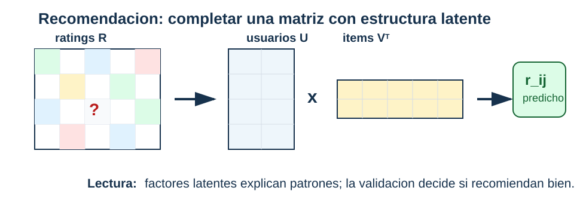

Recomendación básica y estructura latente
Pregunta aplicada
Si sabemos qué ítems han gustado o sido usados por ciertos usuarios, podemos preguntar:
¿qué ítems son similares y qué recomendaríamos a un usuario?
Objetivos del capítulo
Al terminar este capítulo deberías poder:
- construir una matriz usuario-ítem simple;
- calcular e interpretar similitud coseno;
- describir una recomendación item-item;
- explicar la idea de factores latentes por SVD;
- reconocer problemas de popularidad, cold start y sesgo.
- formular una factorización regularizada sobre entradas observadas y derivar sus gradientes;
- estimar costo, memoria y límites de identificación de los factores.
El mecanismo de observación no es neutral
Sea \(R_{ui}\) la preferencia potencial de un usuario \(u\) por un ítem \(i\) y \(O_{ui}\in\{0,1\}\) el indicador de que esa interacción fue observada. El dataset contiene principalmente valores con \(O_{ui}=1\). En plataformas reales,
\[ \mathbb P(O_{ui}=1\mid R_{ui},u,i) \]
no suele ser constante: exposición previa, posición, popularidad y políticas del sistema afectan qué llega a registrarse. Por tanto, la distribución observada
\[ P(R_{ui}\mid O_{ui}=1) \]
puede diferir de la distribución de preferencias sobre todos los pares usuario-ítem. Tratar faltantes como desagrado supone un mecanismo que rara vez está justificado.
Riesgo offline y utilidad de uso
Una métrica offline estima desempeño bajo el protocolo que generó sus pares de evaluación. La utilidad relevante sería una esperanza bajo exposición futura,
\[ \mathbb E_{(u,i)\sim P_{\mathrm{uso}}} [U(u,i,\operatorname{recomendar}(u))], \]
que no se identifica automáticamente con precisión@k o recall@k histórico. Esta brecha explica por qué una comparación offline no demuestra efecto causal sobre satisfacción, diversidad o descubrimiento.
Matriz usuario-ítem
Una matriz \(R\) puede representar:
- filas: usuarios;
- columnas: ítems;
- entradas: interacción, rating, compra, vista o preferencia.
Ejemplo:
\[ R_{ui}=1 \]
si el usuario \(u\) interactuó con el ítem \(i\).
Similitud coseno
Para dos ítems representados por vectores \(x\) y \(y\):
\[ \cos(x,y)=\frac{x^\top y}{\|x\|\|y\|}. \]
La similitud coseno compara dirección más que magnitud.
Ejemplo resuelto: similitud coseno
Supón dos ítems con vectores de interacción:
\[ x=(1,1,0,0),\qquad y=(1,0,1,0). \]
Entonces:
\[ x^\top y = 1,\qquad \|x\|=\sqrt{2},\qquad \|y\|=\sqrt{2}. \]
Por tanto:
\[ \cos(x,y)=\frac{1}{2}=0.5. \]
La interpretación es moderada similitud: comparten un usuario, pero cada uno tiene otro usuario distinto.
Derivación guiada: qué ignora la similitud coseno
La similitud coseno normaliza por las normas:
\[ \cos(x,y)=\frac{x^\top y}{\|x\|\|y\|}. \]
Eso significa que dos ítems pueden tener similitud alta si apuntan en dirección parecida, aunque uno tenga muchas más interacciones que el otro. Esta propiedad puede ser útil para reducir el sesgo por popularidad, pero no lo elimina. Si un ítem aparece en casi todos los perfiles, puede seguir dominando rankings por cobertura y disponibilidad de datos.
La lectura de una similitud debe incluir tres preguntas: qué usuarios comparten los ítems, cuántas interacciones sustentan el cálculo y qué ítems quedan invisibles por falta de datos.
Recomendación item-item
Flujo básico:
- Construir matriz usuario-ítem.
- Calcular similitud entre ítems.
- Para un ítem semilla, buscar ítems similares.
- Excluir ítems ya vistos si se recomienda a un usuario.
Ejemplo resuelto: recomendación item-item
Supón la siguiente matriz binaria de interacción:
\[ \begin{array}{c|rrrr} \text{Usuario} & A & B & C & D\\ \hline u1 & 1 & 1 & 0 & 0\\ u2 & 1 & 1 & 1 & 0\\ u3 & 0 & 0 & 1 & 1\\ u4 & 0 & 1 & 0 & 1 \end{array} \]
Los vectores de ítems son:
\[ A=(1,1,0,0),\quad B=(1,1,0,1),\quad C=(0,1,1,0),\quad D=(0,0,1,1). \]
Para recomendar a partir del ítem \(A\), calculamos similitudes:
\[ \cos(A,B)=\frac{2}{\sqrt2\sqrt3}\approx0.816, \]
\[ \cos(A,C)=\frac{1}{\sqrt2\sqrt2}=0.5, \qquad \cos(A,D)=0. \]
Si el usuario semilla interactuó con \(A\), el ítem más similar es \(B\). Si ese usuario ya vio \(B\), el siguiente candidato por similitud sería \(C\). La recomendación debe excluir ítems ya vistos y declarar que esta regla no resuelve cold start ni sesgo de popularidad.
Evaluación offline: Precision@k
Una evaluación mínima de recomendación separa algunas interacciones conocidas como si fueran futuras. Luego pregunta si el recomendador las recupera entre sus primeras sugerencias.
Si el orden temporal está disponible, se ocultan interacciones posteriores y el modelo se ajusta solo con las anteriores. Un split aleatorio puede usar el futuro para explicar el pasado. Los usuarios evaluados deben conservar al menos una interacción de entrenamiento; los casos de cold start se reportan por separado.
Si para un usuario ocultamos los ítems relevantes \(\{C,D\}\) y el sistema recomienda los tres primeros ítems:
\[ [B,C,E], \]
entonces solo uno de los tres recomendados es relevante. La precisión en 3 es:
\[ \text{Precision@3}=\frac{1}{3}. \]
Si además queremos saber cuántos relevantes recuperó:
\[ \text{Recall@3}=\frac{1}{2}. \]
Estas métricas no prueban satisfacción real. Solo verifican si el ranking recupera interacciones ocultas bajo una simulación offline. Un reporte debe decir qué se ocultó, cómo se partió el dato y qué usuarios o ítems quedaron sin recomendación.
Baseline de popularidad
Antes de celebrar un recomendador personalizado, compáralo contra una regla simple: recomendar los ítems más populares que el usuario no ha visto. La popularidad se calcula solo con entrenamiento. Este baseline suele ser fuerte porque muchos datasets tienen concentración de interacciones en pocos ítems.
Si el modelo latente no supera popularidad en Precision@k o cobertura, todavía no hay una mejora offline de personalización. Si lo supera, el reporte debe mostrar cuánto mejora y para qué grupos de usuarios. La personalización no se presume: se compara.
SVD para factores latentes
SVD puede aproximar:
\[ R \approx U_k\Sigma_kV_k^\top. \]

Lectura de la figura. La factorización representa usuarios e ítems en una baja dimensión compartida. Una recomendación es una predicción incompleta de la matriz, pero también una intervención que puede reforzar sesgos o popularidad.
Esto produce representaciones latentes de usuarios e ítems.
Esta igualdad requiere una advertencia. Una SVD directa trata cada entrada de la matriz numérica como observada; si se rellenan ratings faltantes con cero, se impone el supuesto de que “no observado” equivale a cero. Los métodos de factorización para recomendación suelen optimizar solo sobre entradas observadas o usar objetivos propios para retroalimentación implícita. Aquí la SVD introduce la geometría latente; no resuelve por sí sola el manejo de faltantes.
Factorización sobre entradas observadas
Sea \(\Omega\) el conjunto de pares \((u,i)\) para los que existe una interacción o rating. Asignamos a cada usuario un vector \(p_u\in\mathbb R^k\) y a cada ítem un vector \(q_i\in\mathbb R^k\). Un objetivo básico para ratings explícitos es
\[ \begin{aligned} J(P,Q) &=\frac12\sum_{(u,i)\in\Omega} (R_{ui}-p_u^\top q_i)^2\\ &+\frac\lambda2 \left(\sum_u\|p_u\|^2+\sum_i\|q_i\|^2\right). \end{aligned} \]
La suma recorre solo entradas observadas; no convierte faltantes en ceros. Si \(e_{ui}=R_{ui}-p_u^\top q_i\), los gradientes son
\[ \nabla_{p_u}J =-\sum_{i:(u,i)\in\Omega}e_{ui}q_i+\lambda p_u, \]
\[ \nabla_{q_i}J =-\sum_{u:(u,i)\in\Omega}e_{ui}p_u+\lambda q_i. \]
Para obtener actualizaciones por interacción consistentes con este mismo objetivo, definimos los grados
\[ d_u=|\{i:(u,i)\in\Omega\}|, \]
\[ d_i=|\{u:(u,i)\in\Omega\}|. \]
La penalización puede distribuirse exactamente entre las interacciones:
\[ \begin{aligned} J(P,Q) &=\frac12\sum_{(u,i)\in\Omega}\Biggl[ e_{ui}^2+\frac{\lambda}{d_u}\|p_u\|^2\\ &\quad+\frac{\lambda}{d_i}\|q_i\|^2 \Biggr]. \end{aligned} \]
Cada vector aparece en tantas sumas como indica su grado, de modo que esta expresión coincide con el objetivo global anterior. Una actualización SGD sobre un par observado usa entonces
\[ \begin{aligned} p_u&\leftarrow p_u+\alpha \left(e_{ui}q_i-\frac{\lambda}{d_u}p_u\right),\\ q_i&\leftarrow q_i+\alpha \left(e_{ui}p_u^{\mathrm{anterior}}-\frac{\lambda}{d_i}q_i\right). \end{aligned} \]
Se conserva \(p_u^{\mathrm{anterior}}\) en la segunda expresión para que ambas actualizaciones correspondan al mismo gradiente. Usar \(\lambda p_u\) y \(\lambda q_i\) en cada interacción también es posible, pero corresponde a una penalización ponderada por los grados, no al objetivo global escrito arriba. También pueden añadirse un promedio global y sesgos de usuario e ítem; sin ellos, los factores deben explicar diferencias de nivel que no son necesariamente interacciones latentes.
Alternancia, costo e identificación
El objetivo no es conjuntamente convexo en \((P,Q)\), pero sí es cuadrático en un bloque cuando el otro queda fijo. Alternating least squares fija \(Q\) y resuelve un problema Ridge por usuario; luego fija \(P\) y resuelve uno por ítem. Cada paso no aumenta el objetivo si los subproblemas se resuelven exactamente, pero el resultado puede depender de la inicialización.
Una época SGD que recorre \(|\Omega|\) interacciones cuesta \(O(|\Omega|k)\) y almacena \(O((n_{\mathrm{usuarios}}+n_{\mathrm{ítems}})k)\) parámetros. Esta estructura aprovecha dispersión: el costo depende de interacciones observadas, no del producto completo de usuarios por ítems.
Los factores no son únicos. Si \(A\) es invertible,
\[ p_u^\top q_i =(A^\top p_u)^\top(A^{-1}q_i). \]
Por tanto, una coordenada latente aislada no tiene significado intrínseco. La regularización reduce parte de la indeterminación, pero las interpretaciones de «factor de acción», «factor de drama» o similares requieren evidencia externa. Lo identificable para el objetivo son principalmente los productos y rankings, no los nombres de los ejes.
Para retroalimentación implícita, una ausencia puede significar falta de exposición. Se usan objetivos ponderados, muestreo de negativos o pérdidas de ranking; el objetivo cuadrático anterior no debe trasladarse sin declarar ese cambio de modelo.
Caso longitudinal: interacciones de recomendación
El archivo recomendacion_interacciones.csv contiene usuarios, ítems y ratings ficticios. Su función es mostrar la lógica de una matriz usuario-item pequeña:
| Resultado | Pregunta |
|---|---|
| matriz usuario-item | ¿qué entradas se observaron y cuáles faltan? |
| promedio por ítem | ¿hay sesgo de popularidad? |
| similitud item-item | ¿qué ítems parecen cercanos? |
| cobertura | ¿a cuántos usuarios/ítems puede recomendar? |
| evaluación offline | ¿qué ratings ocultos se predicen? |
Un recomendador puede producir rankings plausibles y aun así amplificar popularidad, ignorar ítems nuevos o recomendar sin diversidad. Por eso la pregunta aplicada no es solo “qué ítem tiene mayor puntaje”, sino “qué se omite y a quién afecta”.
Riesgos de recomendación
Los sistemas de recomendación pueden:
- reforzar popularidad;
- encerrar usuarios en burbujas;
- amplificar sesgos;
- optimizar interacción sin optimizar bienestar;
- fallar con usuarios o ítems nuevos.
Punto de control
Antes de recomendar, responde:
- ¿la similitud refleja preferencia o solo popularidad?
- ¿se excluyen ítems ya vistos?
- ¿qué ocurre con usuarios nuevos?
- ¿qué sesgo puede amplificarse?
Verificaciones seleccionadas
- Una entrada faltante en la matriz usuario-item no significa rating cero; significa no observado.
- La similitud coseno alta entre dos ítems no prueba que sean equivalentes; solo indica patrones de interacción parecidos bajo los datos disponibles.
- Un ranking sin cobertura puede verse preciso para usuarios frecuentes y fallar para usuarios o ítems con pocas interacciones.
Ejemplo resuelto: cobertura mínima
Supón un recomendador que produce al menos una recomendación para 70 de 100 usuarios y cubre 12 de 50 ítems disponibles. Entonces:
\[ \text{cobertura de usuarios}=70/100=70\%, \qquad \text{cobertura de ítems}=12/50=24\%. \]
Aunque las recomendaciones visibles parezcan razonables, el sistema deja sin recomendación a 30% de usuarios y concentra exposición en pocos ítems. Esos conteos deben aparecer antes de afirmar que el recomendador funciona bien.
Para explorar más
- Extensión matemática: calcula una similitud coseno item-item y compara la recomendación con una basada en producto punto.
- Extensión computacional: oculta algunas interacciones conocidas y mide si el sistema las recupera entre las mejores recomendaciones.
- Conexión con proyecto: explica qué sesgo de popularidad podría aparecer y cómo lo reportarías sin exagerar la calidad del sistema.
Revisión del capítulo
Un sistema de recomendación básico parte de una matriz usuario-ítem y mide similitudes o factores latentes para sugerir elementos no observados. La similitud coseno compara dirección de interacción y puede mitigar parcialmente diferencias de escala.
Las recomendaciones item-item son útiles porque se pueden explicar a partir de ítems similares, pero siguen dependiendo del historial observado. La idea de factores latentes resume usuarios e ítems en representaciones de baja dimensión.
El límite central es que el comportamiento pasado no define por completo la preferencia futura. Cold start, popularidad y sesgo deben declararse antes de presentar una recomendación como útil o justa.
Términos clave
- Matriz usuario-ítem: tabla que representa interacciones entre usuarios e ítems.
- Similitud coseno: medida angular entre vectores de interacción.
- Recomendación item-item: recomendación basada en ítems similares a uno observado.
- Factor latente: representación de baja dimensión aprendida de patrones de interacción.
- Cold start: dificultad para recomendar a usuarios o ítems sin historial.
- Bucle de retroalimentación: refuerzo de patrones pasados por recomendaciones futuras.
Ejercicios
Preguntas conceptuales
- Explique por qué similitud coseno puede ser útil cuando algunos ítems son mucho más populares que otros.
- ¿Qué problema aparece para recomendar a un usuario nuevo sin historial?
Problemas cuantitativos
- Calcule similitud coseno entre dos vectores binarios de interacción.
- Dada una matriz usuario-ítem pequeña, identifique los dos ítems más similares.
Práctica computacional
- Implemente una función de similitud coseno para matrices.
- Construya una recomendación item-item simple excluyendo ítems ya vistos.
Interpretación y pensamiento crítico
- Proponga una limitación ética de un sistema de recomendación basado solo en comportamiento pasado.
- ¿Cómo detectaría si el recomendador solo amplifica popularidad?
Profundización matemática y algorítmica
- Formule el objetivo regularizado de factorización sobre \(\Omega\) y derive los gradientes respecto a un vector de usuario y uno de ítem.
- Escriba una actualización SGD para un rating observado, distribuya la regularización mediante \(d_u\) y \(d_i\), y explique por qué debe conservarse el valor anterior de uno de los factores.
- Compare el costo de una época dispersa \(O(|\Omega|k)\) con operar sobre toda la matriz usuario-ítem.
- Demuestre la indeterminación de los factores bajo un cambio invertible de base y explique qué limita su interpretación.
Proyecto de cierre
- Diseñe un recomendador item-item mínimo, reporte tres recomendaciones y escriba una advertencia sobre cold start, popularidad o sesgo.